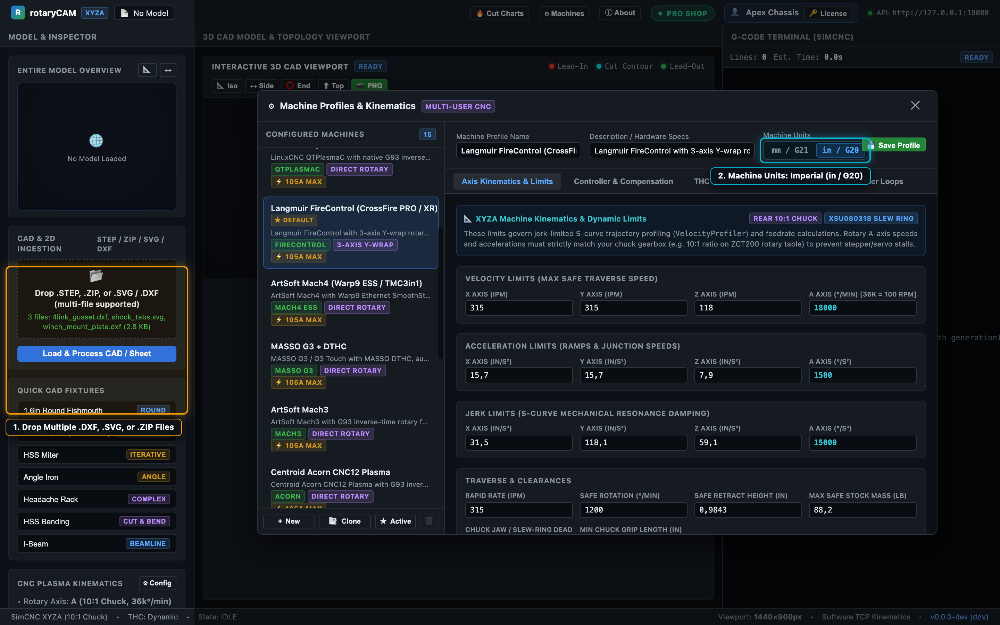

Step 01
Set Machine Units (
Set Machine Units (in / G20 or mm / G21) & Drop Multiple .DXF, .SVG, or .ZIP Files
Check your machine units first. Click ⚙ Machines in the top-right header or check your active machine in the left panel. Controllers like Langmuir FireControl and ShopSabre WinCNC default to Imperial (in / G20, IPM, PSI). LinuxCNC, EdingCNC, and SimCNC tables typically run Metric (mm / G21, mm/min, bar). Switch any profile between Imperial and Metric in one click without rebuilding controller settings.
Next, drop your 2D files into the upload zone:
- Drop multiple
.dxffiles,.svgcutouts, or a.zipkit at once. - Multi-part SVGs (like a sheet of 8 shock tabs) split into separate parts (
shock_tabs_1,shock_tabs_2, etc.) with their own quantity counters. - DXF
TEXT,MTEXT, and open scribe lines map straight to marking paths without manual layer cleanup.
